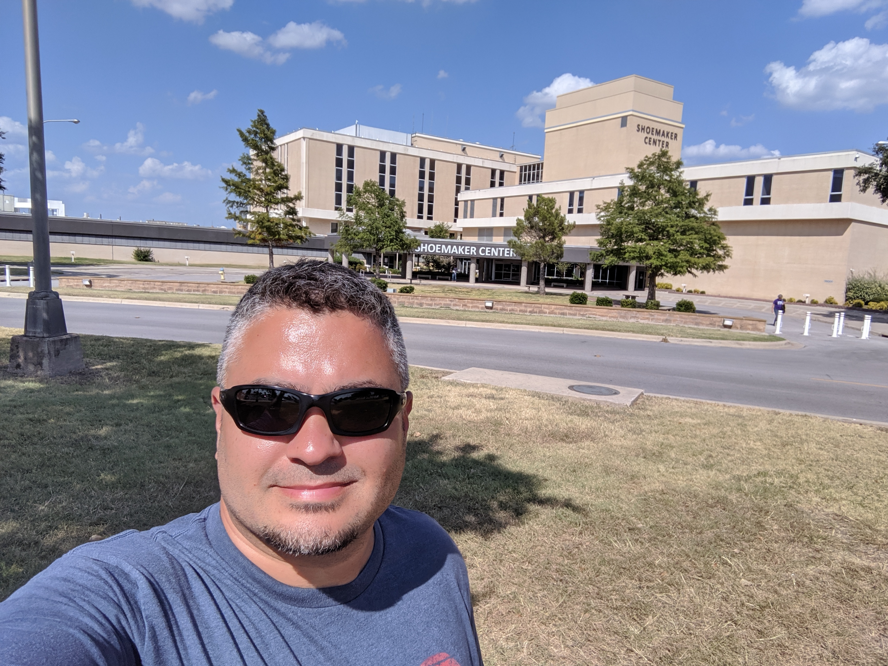
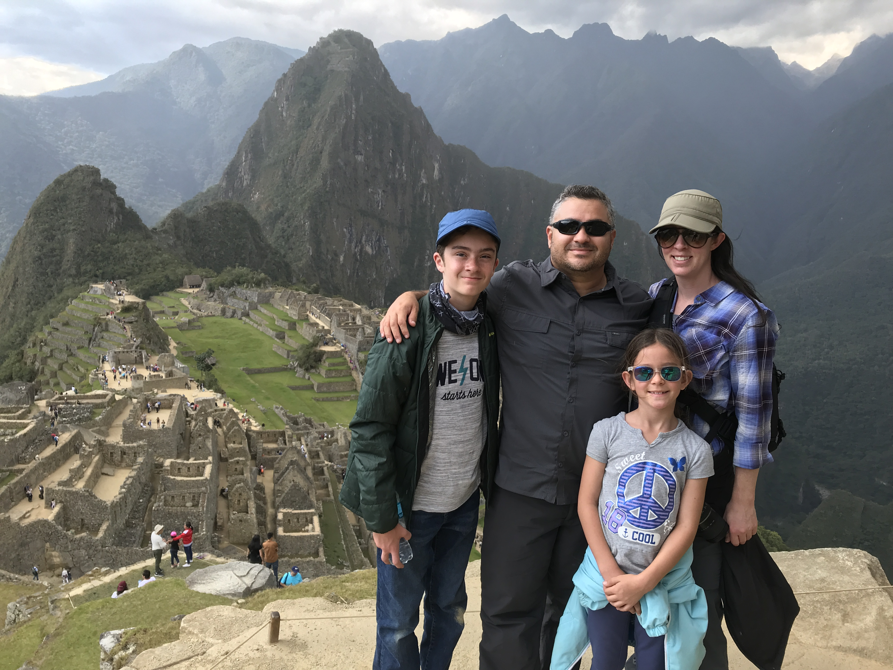

Charles
Charles was born in Fort Hood, Texas at the Shoemaker Hospital into a military family. Over his childhood he moved around to different military base. Once he graduated form high school, he joined the Air Force. While in the Air Force he met his spouse in Spokane, Washington. Over the years they welcomed to kids, Cj and Lilly. Since then they traveled the world together.
Rome, Italy
One of our favorite trips that we took as a family was to Italy. We drove around the countryside, visited cities, explored castles & colosseums, and tried new foods. What a great experience!

Peru
As a family we have been lucky enough to explorer other cultures and learn about ancient history. One place that had it all was Peru. In Peru we visited Machu Picu and other lesser know historic sites. In Peru it truely felt like an adventure due to our accomdations, the trains we took, the foods we ate, the hikes we took, and the cities we explored.

Easter Island
One of the most unique places we visited was Easter Island. Due to its location not many people visit the island. We were lucky enough to be stationed in Chile, so we had easy access. Explorer the national park and meeting the locals made it into the perfect trip. One fact most people don't know, they have some of the best sunsets. We took part of this every night of our stay. Loved it!